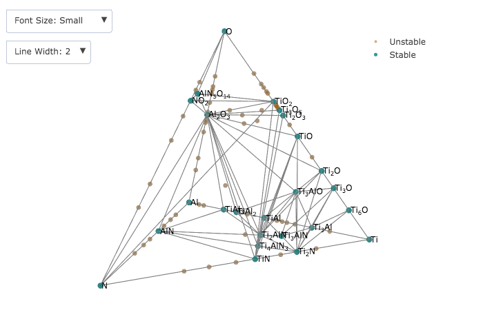
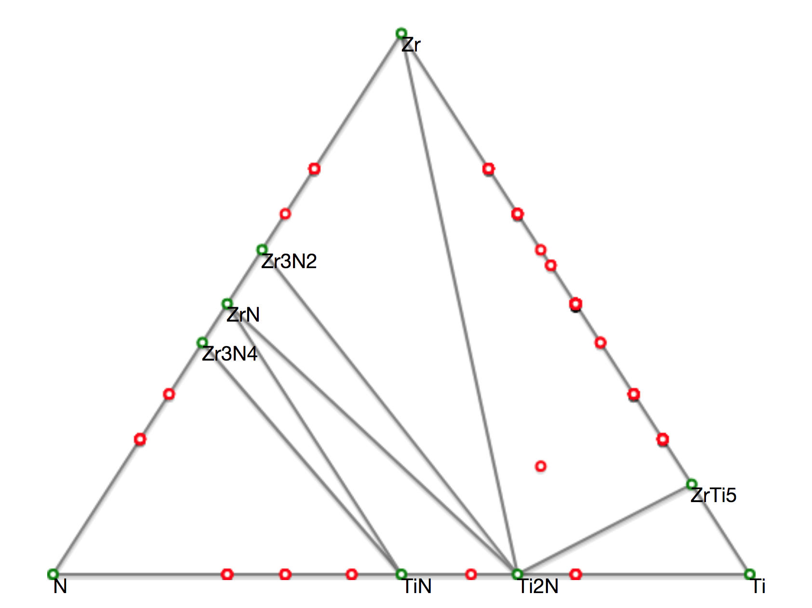

Phase diagrams are an extremely useful tool in many realms of science and engineering because they allow us to visualize at a glance what phases can be expected in a system of various degrees of mixing or alloying or at different temperatures, pressures, etc... Access to detailed phase diagrams is however not always excellent and is frequently either in a dusty old set of the ASTM phase diagram binders or somewhere behind a pay wall on the internet. One means of circumventing this lack of access is by using the freely available internet resource named The Open Quantum Materials Database (OQMD).
One of the most interesting features of the OQMD is the ability to generate custom, arbitrary binary, ternary, and quaternary phase diagrams from elements and/or compounds of your choice. The OQMD will also label all of the species and phases it finds based on its database of materials based on their stability which allows you to neglect consideration of nonsense or high energy phases at a glance.
One particular instance where I find this to be useful is in the generation of EAM or MEAM potentials from a series of VASP calculations. When doing so, the calculator needs to supply information about a range of species that may be contained within the system that you are investigating. Because the nature of humans is to sometimes forget things or to make subtle errors, it is helpful to have this database to cross reference your intuition of what phases may or may not be present in the system(s) you are trying to simulate and/or fit.
Below I have included an image of a quaternary phase diagram of the Ti-N-O-Al system that I generated using tools on the QOMD website.
Below is another phase diagram, this time a ternary diagram of the Ti-Zr-N system, I also generated using tools on the QOMD website.
I highly recommend visiting their site and checking out all of the tools that they have to offer, if for nothing else then the nice insight that it gives to have a more 'hands-on' view of what phases are and aren't stable in a variety of systems.